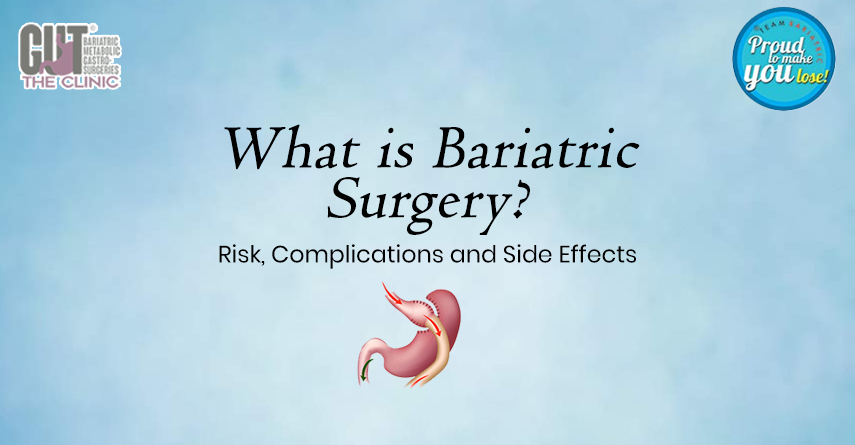

Understanding Excessive Body Fat and Obesity: Causes, Risks, and the Role of Bariatric Surgery
Understanding Excessive Body Fat and Obesity
When a person’s weight is higher than what is acknowledged as healthy for their height, that person is overweight or obese. Overweight and Obesity are defined as abnormal or excessive body fat accumulation that may damage your health. These people live shorter lives and live with more chronic diseases.BMI and Its Significance
We use body mass index (BMI) to identify overweight and obesity. BMI is defined as a person’s weight (in kilograms) divided by the square of height in meters. The higher the BMI, the higher the risk of mortality of a person. That’s because obesity is more than extra weight – it’s a complex disease that can affect the whole body. The difference between being overweight and obese is made by looking at the BMI and the relative mortality risk increase. A person whose BMI is in the range of 18.0 to 22.4 is considered normal weight; an overweight person has a BMI of 22.5 to 27.4. Obesity is BMI 27.35 to 37.4 without medical complications. If your BMI is 32 with associated medical complications you can opt for Bariatric surgery for cure.Health Complications Associated with Obesity
Obesity is a threat to health and is associated with multiple medical complications, including:-
_x0001_
- Hypertension _x0001_
- Diabetes Mellitus _x0001_
- Obstructive sleep apnea _x0001_
- Cardiovascular disease _x0001_
- Pancreatitis _x0001_
- Dyslipidemia _x0001_
- Non-alcoholic fatty liver disease _x0001_
- Polycystic ovarian syndrome _x0001_
- Infertility _x0001_
- stroke _x0001_
- Cataracts _x0001_
- Cancer (uterus, cervix, prostate, kidney, colon, esophagus, pancreas, liver) _x0001_
- Osteoarthritis